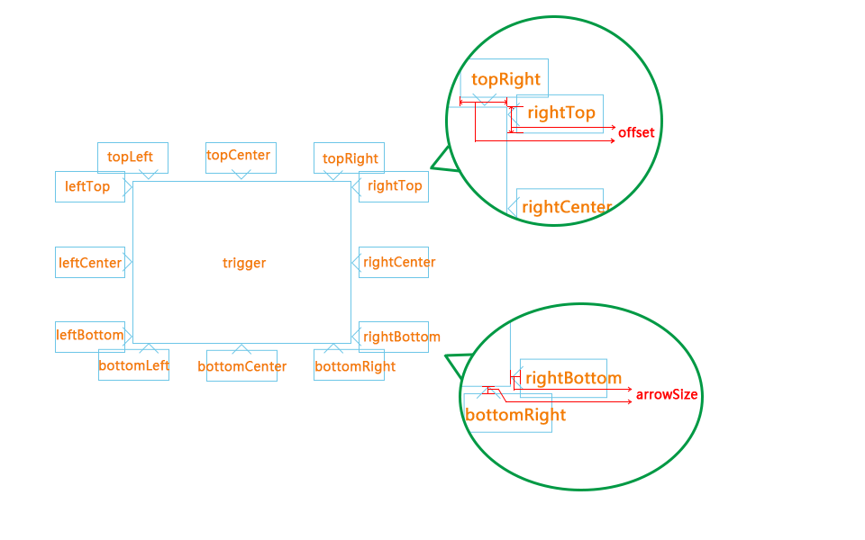

参数设置
| 参数 | 默认值 | 类型 | 描述 |
|---|---|---|---|
| template | undefined | String | tip 层 模版 ，可以是 String 常量，也可以是 script 标签的id(#abcd),className(不推荐)，其他选择器 |
| content | null | String,Function |
当值设定为 String 时，则清空 [ data-tooltip="content" ] 内容区，并插入当前值，
当值设定为 Function 时，实现动态插入，调用this.insertContent()
content:function(){
var cnt = ' 1234';
var fn = this;
setTimeout(function(){
fn.insertContent(cnt);
},2000)
}
|
| loading | null | String,Boolean |
当值设定为true 时，实现动态加载，并在内容区设定 [ data-tooltip="content" ]，和参数 'content'相互关联。
默认loading模版： loading.... 当值设定为 String 时，则覆盖默认的loading模版 |
| trigger | 'hover' | String | 可选参数：‘click’ |
| selector | false | Boolean | selector 不等于false时，实现动态绑定： // 动态 $(elem).tooltip({ selecotr:'.XXXX' }) //方法原理： $(elem).on(event,selector,function(){ // elem 静态元素 // selector 动态元素 }) |
| visible | false | Boolean | 当值设定为 true 时，鼠标能在tip层上停留，和参数 'trigger'相互关联 |
| timeout | 0 | Number | 不可用 |
| zIndex | 1990 | Number | 设定tip层的z-index 值 |
| position | 'auto' | String | 和参数 'center'相互关联，参考[方向说明](#pic_1)图 |
| center | false | Boolean | 和参数 'position'相互关联，参考[方向说明](#pic_1)图 |
| appendTo | 'body' | String | 可选参数：‘after’，设置tip dom 元素追加到 body 或者 目标元素之后 |
| offset | 30 | Number | tip偏移微调，校正箭头对准目标元素 |
| arrowSize | 6 | Number | 箭头的宽度或者高度，当箭头绝对定位于在tip 层外面（代码），不适用于最外层包裹（padding） |
| close | false | Boolean | 关闭按钮，事件绑定[ data-tooltip="close" ] |
| callback | function(){} | Function | 回调函数 |
默认参数
// 默认参数
$.tooltip.defaults = {
template: undefined,
content: null,
loading:null,
trigger:'hover', // hover click
selector:false,
visible:false, // when the mouse leave the target , over the tips ,tips is visible ?
timeout: 0,
zIndex: 1990,
position:"auto", // auto left top right bottom
appendTo:'body',
offset:30,
arrowSize:6,
close: false, // close btn
center:false,
callback: function() {}
};
定位说明

参考实例
示例1
$('.dynamic_demo1').tooltip({
template:itourstyle,
offset:40,
visible:true
});
// 屏幕缩放 位置只适应
|
示例2
$('.dynamic_demo2').tooltip({
template: vancltempl,
offset:40,
visible:true,
position:'bottomRight'
});
|
示例3
$('.dynamic_demo3').tooltip({
template:Qzonestyle,
offset:40,
visible:true,
position:'rightBottom'
});
|
示例4
$('.dynamic_demo4').tooltip({
template:Qzonestyle,
offset:40,
visible:true,
position:'bottomLeft'
});
|
示例5
$('.dynamic_demo5').tooltip({
template:douban,
offset:28,
visible:true,
position:'rightBottom'
});
|

$('.dynamic_demo6').tooltip({
template:hotelstyle,
offset:40,
visible:true,
position:'topLeft',
appendTo:'after'
});
|
示例7
$('.dynamic_demo7').tooltip({
template:vancltempl,
offset:30,
position:'leftTop'
});
|
示例8
$('.dynamic_demo8').tooltip({
template:vancltempl,
offset:30,
position:'topRight'
});
|
示例9
$('.dynamic_demo9').tooltip({
template:vancltempl,
offset:30,
position:'rightTop'
});
|
示例10：异步加载
// 显示 loading
// 并异步加载（ajax 请求）
// data-tooltip="content"
// 属性为内容区 (必须)。
var douban2 = '
|
示例11
|
示例12
|
动态加载
selector：false;// 默认值
$(elem).tooltip({ // 默认 非动态
})
$(elem).on(event,function(){ // elem 静态元素
})
// 动态
$(elem).tooltip({
selecotr:'.XXXX'
})
//方法原理：
$(elem).on(event,selector,function(){ // elem 静态元素
// selector 动态元素
})